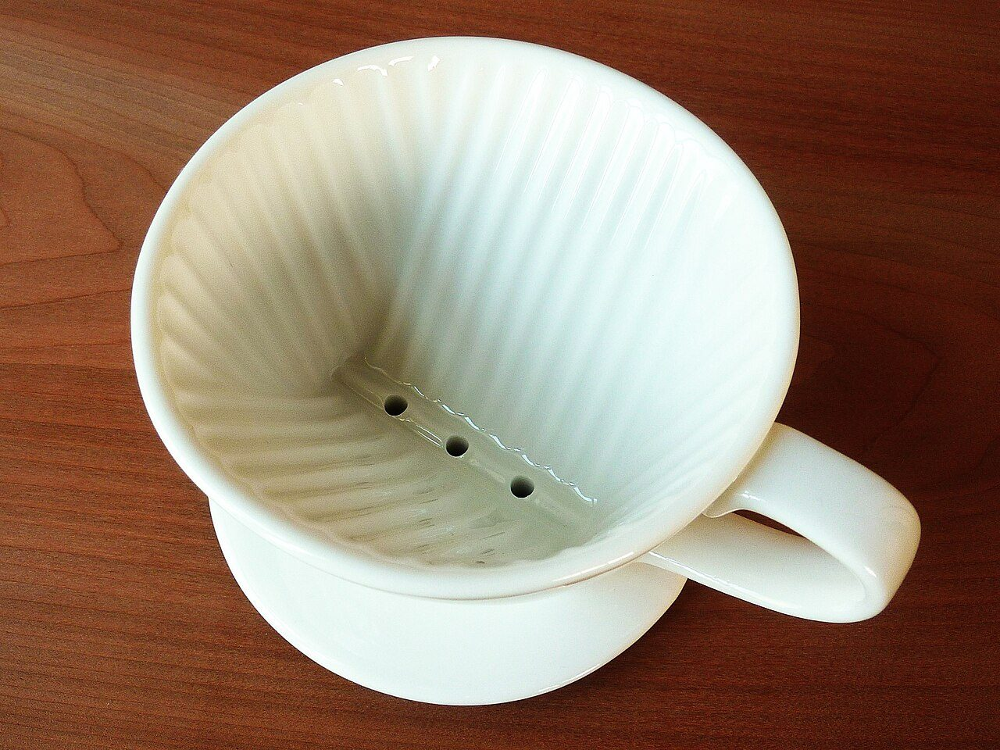

制作側の連想
パンチングマシンの部位を、配置図にしてみる
このサイトは、ゲームコーナーに立つパンチングマシンを正面から見た図に見立てて作りました。六つの部位に番号をふり、上の図と並べています。制作側の連想で、お店の理念・由来とは無関係です。実際の機種の仕様を示すものでもありません。
凡例
六つの部位
- 1パンチパッド正面の下寄りに据える、赤い丸みのある打面。
- 2スコア表示筐体の上部にある、結果を出すための表示窓。
- 3コイン投入口表示窓の下に開けた、細いスリット状の差し込み口。
- 4可動アームパッドを奥で支える、押されて動く腕の部分。
- 5筐体すべてを収めて立つ、縦長の本体ボディ。
- 6ベースプレート床に据えて全体を受ける、幅広の土台。
ギャラリー(イメージ)
パンとコーヒー豆の写真


写真はイメージです。お店のものではなく、お店で提供している商品を示すものでもありません。
ギャラリー(イメージ)
カップとグラスの写真



写真はイメージです。お店のものではなく、お店で提供している商品を示すものでもありません。
ご案内
お店のこと(確認できたものだけ)
| 所在地 | 〒868-0086 熊本県人吉市下原田町荒毛１３３４−６ |
|---|---|
| 電話 | 準備中 |
| 営業時間 | 準備中 |
| 定休日 | 準備中 |
| ご予約 | 準備中 |
| 駐車場 | 準備中 |
| SNS | Instagram @drivein_ajisato |